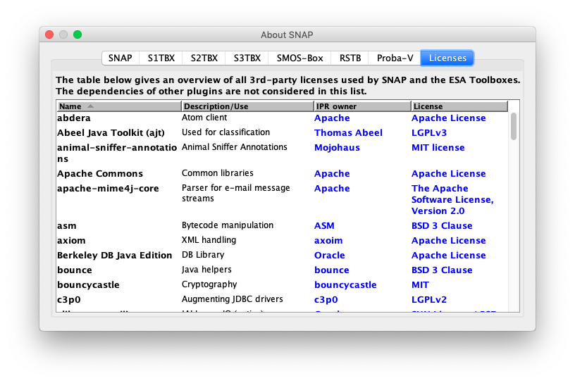

| The 'About SNAP' Window | |
Selecting the  About...
entry in the Help Menu brings up a window similar to the following image,
which contains several tabs displaying various information.
The number of tabs is dependent on the amount of toolboxes installed in SNAP. The tabs "SNAP" and "Licenses" are always there.
About...
entry in the Help Menu brings up a window similar to the following image,
which contains several tabs displaying various information.
The number of tabs is dependent on the amount of toolboxes installed in SNAP. The tabs "SNAP" and "Licenses" are always there.
This area displays various information about the SNAP version, notes on the release, as well as Java related information.
On the Licenses tab, you are able to examine the exhaustive list of 3rd-party licenses used for the software contained in SNAP and the installed toolboxes.